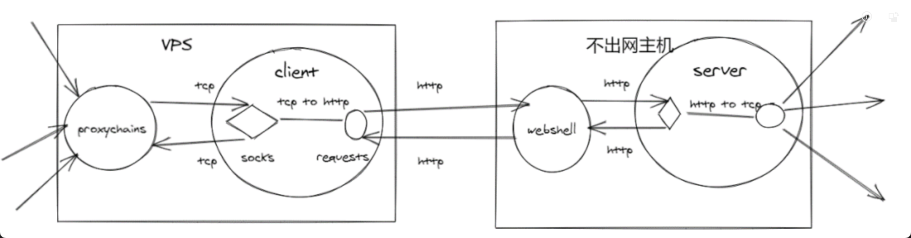
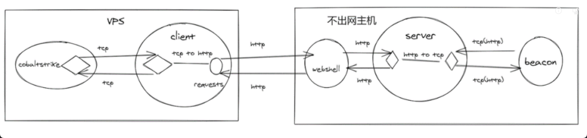

先简单带一下常见的正向HTTP隧道
0x01正向HTTP隧道
这种方式应用范围很广，有webshell的情况下都支持此方式
原理
页面上存在成熟的工具Reg、NeoReg、suo5等
原理大概如下图所示：（这里直接拿Viper作者的图来说了）

-
client运行在互联网的vps上，开启端口监听处理proxychains转发的tcp连接。（client对应的就是reg的本地python脚本和suo5的客户端）
-
clinet从tcp连接中读取数据，将数据存储在post请求中发送到webshell。
-
webshell将http请求解析并进行转发。（webshell集成了上图中的server)
suo5其实实现了基本全双工的模式，这个问题后面有空再研究。
0x02不出网上线CS场景
CS的beacon只能反向连接，不出网的情况下无法直接反向连接外网vps
其实也可以利用中转的方式进行上线
原理
成熟的工具：pystinger（毒刺）
原理大概如下图所示：（这里直接拿Viper作者的图来说了）

server端：
- beacon将http请求(假设数据为AAAAAA)发送到server。
- server将(AAAAAA)存储到缓存，并保持与beacon的http连接。
client端：
- 请求webshell。
- webshell转发请求到server。
- server将缓存的(AAAAA)填充到http应答中。
- webshell将server的应答转发给client。
- client从应答中获取数据(AAAAA)。
- client与cobaltstike的listener建立tcp连接。
- client发送(AAAAA)到cobaltstrike的listener。
- conbaltstrike发送应答数据(BBBBBB)。
- client将数据(BBBBB)封装到http请求中,通过webshell转发到server。
- server通过之前保持的http连接将(BBBBBB)发送到beacon。
实际的流程就是数据包的转换和转发，理解完上面的正向，反向的逻辑只是增加了一个监听而已。
可能会有人有这样的问题：这里的webshell可以类似reg把server也整合一下吗，不落地server？
答案是不行的，区别于正向连接，反向连接时需要监听端口，webshell是无法做到的，所以使用毒刺的时候，不出网的机器需要落地两个文件（webshell、server）
0x03实战钓鱼不出网上线
根据上面的不出网上线cs案例解释，其实主要做的就是流量转发和格式化
格式化的部分就是毒刺的client和server在做，但是这样会在webshell的机器上落地sever的二进制文件，同时需要开启监听，不够opsec。
不妨把思路发散一下：有没有可能把server和c2马绑在一起呢？或者换句话说，我们可以重新写我们的c2马，直接把结果写入到webshell缓存中，c2的控制端会请求webshell获取缓存读取结果，就完成了不出网的上线流程。
这个案例其实之前项目遇见过：
钓鱼的时候，机器不出网如何上线？？
找内外网可能互通的业务：邮件系统、OA系统等（可能需要账号，但是这些系统大概率内外网是互通的），或者直接摆烂，找能做数据交互的系统域名，批量都试一下。
对应我们上面的思路，重新设计我们的c2马和服务端，或者没那么麻烦，自己写一个能执行命令、文件上传和读取的马就可以了。
木马：
-
定时读取邮件、OA系统或者其他能存储数据的系统的数据。（如邮件内容，系统编辑内容、oa聊天记录等等），作为命令输入。
-
获取命令输入后将执行结果写入对应系统。
因为内外网系统互通
c2控制端：
- 将想执行的命令写入到外网系统，供木马读取
- 将木马执行结果读取并响应
实战应用的话，其实还是可以用的。
机器不出网的话，肯定会配内部dns，所以去外网找可以存储数据的系统域名，写木马的时候加上批量的逻辑if else尝试所有可能的域名，保证稳定获取结果就可以了。
参考连接：
（红队攻防实践：不出网主机搭建内网隧道新思路）https://mp.weixin.qq.com/s/WzXztQoiqBec-y23dRj0ww